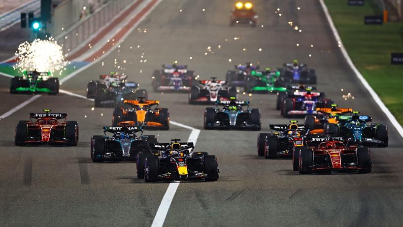
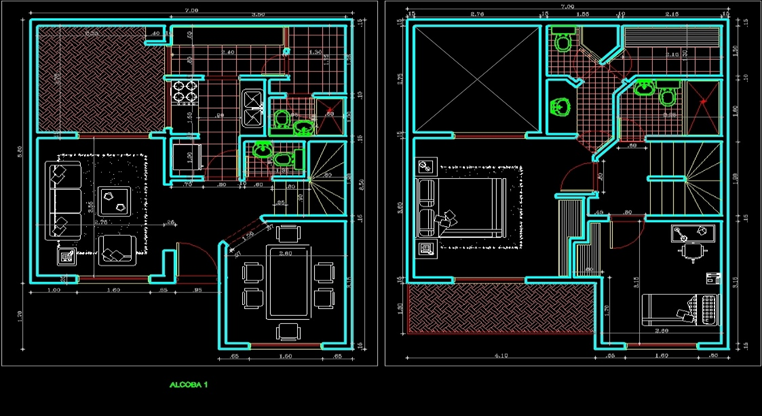

Welcome to my personal e-portfolio. This website presents my background, experience, reflection, and professional communication as I prepare to begin my career in mechanical engineering.

I am a last year Mechanical Engineering student at UTS. My interest in Mechanical Engineering was first sparked by Formula 1, a world where precision, performance, and innovation operate at the highest level. I was drawn to the way engineering decisions directly influence speed, efficiency, and reliability. That fascination developed into a deeper interest in how complex mechanical systems are designed, analysed, and refined to perform under demanding conditions.
For me, engineering is about optimising performance while maintaining safety, functionality, and efficiency.
During my studies and industry placement, I have applied this mindset in practical environments, working with AutoCAD to develop construction and architectural plans across mechanical, electrical, and fire services systems. This experience has strengthened my technical drafting skills, attention to detail, and understanding of how engineering designs translate into real-world infrastructure.
As I continue developing as a mechanical engineer, I aim to build a career focused on high-performance systems and intelligent design, combining analytical thinking with practical application.

Sydney, NSW 2212 | 0422 665 430 | ralphmina777@gmail.com
Final-year Mechanical Engineering student with over 2.5 years of full-time experience in the construction industry and a 12-week engineering placement focused on AutoCAD drafting for mechanical, electrical, and fire services systems. Experienced in working across multidisciplinary teams and translating technical designs into practical, buildable solutions. Seeking a graduate mechanical engineering role where I can apply my industry experience, technical design skills, and analytical knowledge to contribute to efficient, high-performance engineering projects while continuing to grow professionally.
University of Technology Sydney, Ultimo NSW
Holy Spirit University of Kaslik (USEK), Lebanon
Leadership: I am leading a group of people at work every day on construction job sites. I was also the group leader of many projects throughout university and school.
Teamwork: My team projects result at work and at university have always been satisfying. For example, at university, we worked on the Engineers Without Borders Challenge where I had a big positive impact on my team.
Available on request.
Before beginning my 12-week internship, I expected to apply the theoretical knowledge from my mechanical engineering degree directly to complex design calculations and advanced engineering analysis. I anticipated being heavily involved in technical problem-solving tasks like university projects, such as system modelling or performance optimisation. Given my prior construction experience, I also expected to feel confident navigating the site environment and understanding project workflows.
The reality of the internship was both different and more valuable than I had imagined. Rather than focusing purely on calculations, I quickly realised that professional engineering work requires precision, coordination, and clear communication across multiple disciplines. Working primarily with AutoCAD on mechanical, electrical, and fire services drawings, I gained firsthand insight into how engineering designs must integrate seamlessly within architectural constraints and real-world construction conditions. I observed how even minor drafting errors could create costly site delays, reinforcing the importance of attention to detail and accountability. The experience highlighted that engineering is not just about technical knowledge, but about producing clear, buildable, and coordinated documentation.
One of the most important lessons from my internship was the significance of multidisciplinary collaboration. Mechanical systems do not exist in isolation; they must align with structural, electrical, and architectural components. Seeing how coordination meetings and drawing revisions shaped the final design strengthened my understanding of systems thinking. Another key lesson was the importance of professional communication. Whether clarifying drawing changes or responding to design adjustments, effective communication ensured that project progress remained smooth and efficient. These lessons were important because they shifted my perspective from thinking like a student solving isolated problems to thinking like an engineer contributing to a larger project ecosystem.
This internship has significantly shaped my professional identity. I now see myself not only as a future mechanical engineer focused on performance and design, but also as a practical problem-solver who understands the realities of construction and implementation. My prior 2.5 years of construction experience allowed me to approach tasks with an awareness of site conditions, safety considerations, and workflow efficiency. Combined with my technical training, this gives me a balanced perspective between design intent and real-world execution.
After this workplace experience, my value proposition to an employer lies in my ability to bridge theory and practice. I bring hands-on construction experience, technical drafting capability, and an understanding of multidisciplinary coordination. I can contribute effectively to team environments, produce accurate and buildable documentation, and adapt quickly within dynamic project settings. Most importantly, I understand that engineering excellence is not only measured by innovation, but by precision, reliability, and collaboration.
Dear Hiring Manager,
I am writing to apply for the Graduate Engineering Program at Industrus Engineering. As a final-year Mechanical Engineering student, I am eager to apply my technical knowledge and practical experience in a professional consulting environment. My internship experience, combined with my strong analytical and communication skills, has prepared me to contribute effectively to innovative engineering projects while maintaining high professional standards.
Commitment to ethical conduct and professional accountability: During my internship, I was responsible for assisting with building plan documentation and ensuring compliance with safety and regulatory requirements. I prepared accurate AutoCAD drawings and documentation that could be used by multiple teams to assess building compliance and safety considerations. I ensured all documentation followed company standards and engineering guidelines, while carefully checking measurements, layout accuracy, and compliance requirements before submitting drawings for review.
Demonstrated ability to communicate effectively with engineers and stakeholders: During my internship, I worked with engineers and professionals from different disciplines involved in construction planning and project coordination. I clearly communicated technical information and documentation by explaining drawing details, discussing layout changes, and responding to feedback from engineers and project staff.
Ability to engage in a creative, innovative, and proactive environment: While working on engineering drawings and documentation, I encountered situations where design plans needed adjustments to better align with real-world site conditions. I proactively reviewed design plans, identified potential issues, and suggested improvements where necessary to support practical and workable solutions.
Demonstrated ability to use and manage information: My internship involved handling technical drawings, project documentation, and engineering information used by multiple project teams. I used AutoCAD and documentation tools to create structured and well-organised building plans and records, ensuring files were clearly labelled and maintained for easy access and updates.
Ability to manage personal performance in a professional environment: During my internship, I managed tasks independently while meeting deadlines within project timelines. I organised my workload, prioritised responsibilities, and regularly reviewed progress while also seeking feedback from supervisors to continuously improve my work.
Ability to work in a team and demonstrate leadership when required: Many of the projects I worked on required collaboration between engineers, planners, and construction teams. I actively participated in team discussions, shared technical insights, supported colleagues when resolving design issues, and ensured my work aligned with the needs of the broader project team.
I would welcome the opportunity to further discuss how my academic background, technical skills, and internship experience align with the Industrus Engineering Graduate Program. I can be contacted via email or phone at your convenience. I have attached my resume and would be pleased to provide any further information if required.
Thank you for your time and consideration.
Kind regards,
Ralph Mina